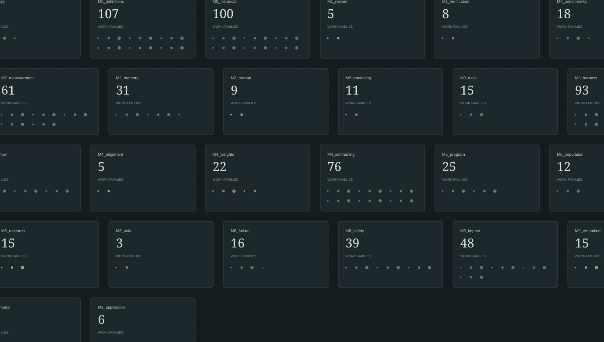
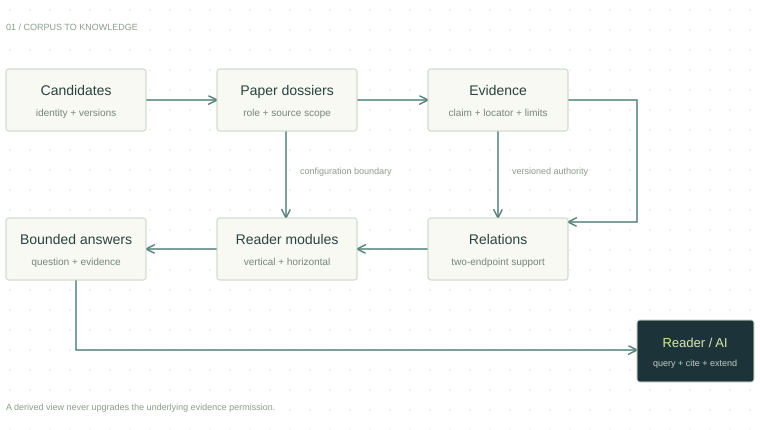

A METHOD AND SKILL FOR AI-READABLE SURVEYS
Survey for AI
让一个领域的知识，
成为 AI 可查询的 Survey。
领域适配 · 证据组织 · 谱系与比较 · 需求路由 · 有界回答
RSI is the worked example. The method is the contribution.
00 / OVERVIEW通用方法 · RSI 实例
先构建可查询的知识。
再回答不同的问题。
每一步保留依据。
我们设计一套领域可适配的方法和 Skill：将文献身份、具体机制、来源证据和关系分别建模，形成纵向发展、横向比较和读者模块。AI 先定位所需知识，再按需展开依据。下方是 RSI 固定库的真实实例；跨领域有效性仍需独立验证。
VERIFIED LINEAGE / 已核谱系子图点击节点 → 独立论文解析
仅投影明确关系；组织分支不是继承树全量文献库 ↗
01 / THE RESEARCH ATLAS纵向发展 · 横向扩展
一个领域，
不止一种读法。
26 条研究分支连接理论、学习、代理、评价与治理。按分支展开论文；沿已核关系读发展；用相同的系统边界比较方法。
排列为阅读组织，不表示论文继承
THE CORPUS THROUGH TIME
从早期形式化，到当代系统。
按已登记年份统计；缺失年份不参与图中计数。
02 / REUSABLE METHOD领域适配 → 证据 → 图谱 → 模块 → 回答
把流程变成 Skill。
把领域变成接口。
通用部分定义身份、版本、证据权限、关系和回答契约；领域适配器定义术语、角色、比较维度与读者问题。点击下方查看 RSI 实例中的各层记录；完整通用流程见方法与 Skill 页面。
SURVEY CONSTRUCTION / DATA FLOW

03 / INSIDE A PAPER DOSSIER真实论文 · 真实版本 · 真实定位
进入一篇论文。
看见结论从何而来。
解析卡包含研究角色、机制、评价协议、系统边界、可采用主张、限制及关系。正文选段保留在证据账本中，AI 可以按需取得。
01 逐篇解析02 原子主张03 来源 / 版本 / 定位04 证据选段与限制05 关系与读者模块
04 / SAME QUESTION, DIFFERENT LOOPS机制比较，不构造跨协议排名
都叫自我改进。
究竟改进了什么？
把更新对象、保留尺度与固定部分放在同一张表中。理论保证、代理源码演化和自博弈权重更新具有不同的证据边界。
比较字段取自已核配置。空缺保留为 unknown；不同任务、模型与预算的分数不直接排序。
VERIFIED RELATION / 双端原文不是“先出现”，
不是“先出现”，
而是“如何联系”。
05 / A SURVEY THAT STARTS WITH YOU6 类读者 · 6 个根问题 · 38 个模块
从你的问题出发。
读需要读的部分。
选择一个问题，先读有界回答，再进入主张、论文和模块。这里展示的是已经整理的证据回答，不会临时编造模型输出。
06 / THE PAPER LIBRARY808 个文献家族 · 每篇一张解析卡
读细节，
也读它的边界。
按标题、主张或机制检索，结合角色和研究分支筛选。点击论文打开解析，或查阅可供 AI 读取的逐篇卡片。
07 / OPEN EVIDENCE, EXPLICIT LIMITS可查询 · 可追溯 · 可扩展
逐篇解析卡808
来源版本记录1,207
原文证据记录1,262
准入主张745
严格原文计划 533 / 570；37 条例外保留
选段审查不等于整篇穷尽审查。来源与证据账本包含历史和导航记录；是否可引用，由各条记录的准入权限决定。